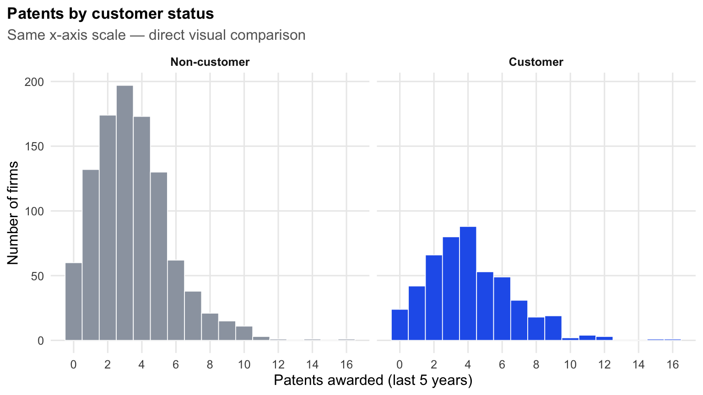
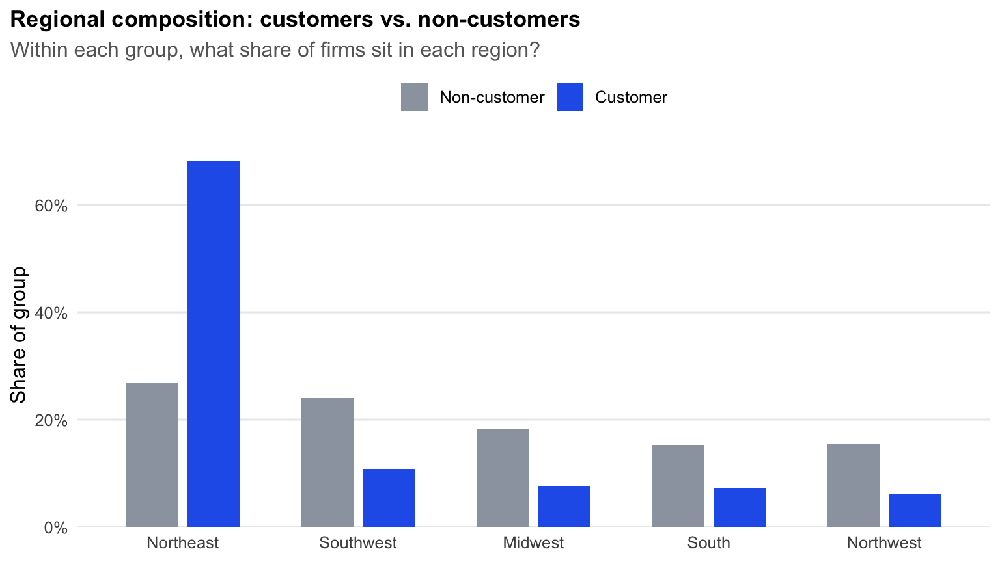
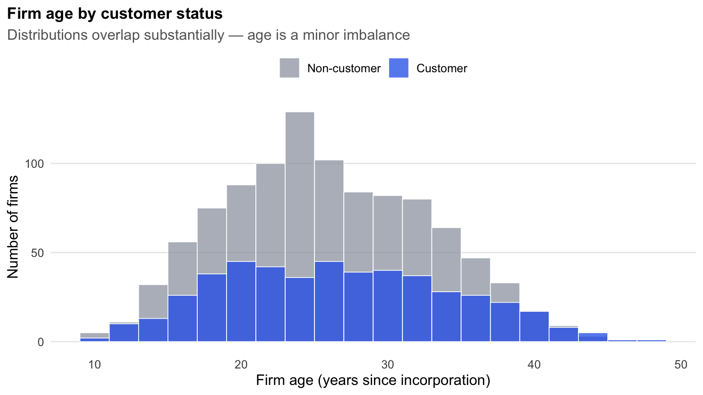
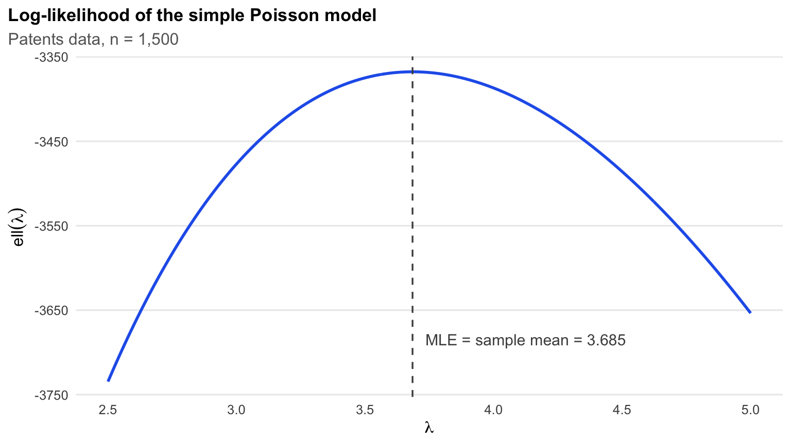
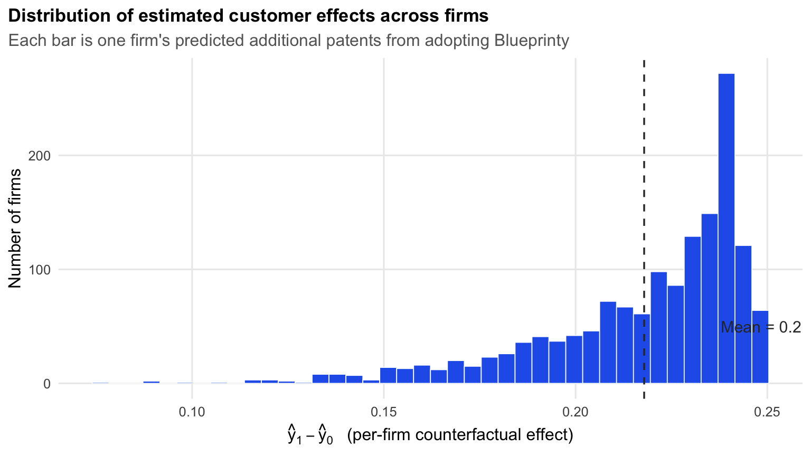

df <- read_csv("blueprinty.csv", show_col_types = FALSE) |>
mutate(
customer = factor(iscustomer, levels = c(0, 1),
labels = c("Non-customer", "Customer")),
region = factor(region)
)Introduction
Blueprinty is a small software firm that sells blueprint-drafting tools tailored to engineering companies preparing US patent applications. Their marketing team would like to make a sharp, evidence-based pitch: firms that use Blueprinty file more successful patent applications than firms that don’t.
If we could run a randomized experiment — randomly assigning some firms to use Blueprinty and others to not — answering that question would be straightforward. But we can’t. Blueprinty’s customers chose to become customers. The ideal dataset would track each firm’s patenting both before and after it adopted Blueprinty’s software, but no such data exists either. What Blueprinty does have is a snapshot of 1,500 mature engineering firms, recording for each one the number of patents awarded in the last five years, the firm’s age and region, and whether or not it is a Blueprinty customer.
A naive analysis of these data would just compare the mean patent counts of customers and non-customers and call it a day. The problem is that customers and non-customers are not exchangeable. If Blueprinty’s customers happen to be older, larger, or concentrated in the Northeast (where many engineering firms cluster), then any raw difference in patent counts could simply be picking up those differences — not anything about the software. Our job in what follows is to take the question seriously: build a probability model for patent counts, estimate it by maximum likelihood, and use it to ask the right counterfactual question — holding firm characteristics fixed, what would we expect the same firm to do if we flipped its customer status?
Exploring the Data
| Patents awarded over the last 5 years | ||||||
|---|---|---|---|---|---|---|
| Summary by customer status | ||||||
| Customer status | Firms | Mean patents | Median patents | Std. dev. | Min | Max |
| Non-customer | 1019 | 3.47 | 3.00 | 2.23 | 0 | 16 |
| Customer | 481 | 4.13 | 4.00 | 2.55 | 0 | 16 |
Customers average 4.13 patents over the five-year window, compared to 3.47 for non-customers — a raw gap of about 0.66 patents per firm, or roughly 19% more patents. That’s the number Blueprinty’s marketing team is interested in. But before we celebrate, we need to look at how the two groups compare on their other characteristics.
Patent counts by customer status

Visually, both distributions are right-skewed with a long upper tail and a mode around 3 patents. The customer distribution is shifted slightly to the right — there are noticeably more customers in the 5–8 patent range and a thinner concentration at zero — but the distributions overlap heavily. This already tells us something useful: whatever Blueprinty’s effect is, it is a shift in the average and not a dramatic re-shaping of which firms patent at all.
Are the two groups otherwise comparable?
Crucially, Blueprinty’s customers are not a random sample of mature engineering firms. To see whether age or region might confound the comparison, we look at each in turn.
| Region by customer status | ||||
|---|---|---|---|---|
| Customers are heavily concentrated in the Northeast | ||||
| region | Non-customer | Customer | Total | Customer share |
| Northeast | 273 | 328 | 601 | 54.6% |
| Southwest | 245 | 52 | 297 | 17.5% |
| Midwest | 187 | 37 | 224 | 16.5% |
| South | 156 | 35 | 191 | 18.3% |
| Northwest | 158 | 29 | 187 | 15.5% |

This is the most important picture in this section. 68% of Blueprinty’s customers are in the Northeast, but only 27% of non-customers are. Whatever explains this — maybe Blueprinty’s sales team is in Boston, maybe Northeast engineering firms are simply more receptive to software vendors — it means the two groups live in very different parts of the country, and we cannot ignore that when interpreting the raw patent gap.

Firm age tells a different story. Customers average 26.9 years old and non-customers average 26.1 — a difference of less than one year, and the full distributions overlap almost completely. Age is not a strong source of imbalance, but we’ll include it in the regression anyway because patenting is a function of how long the firm has had to accumulate IP, and because the relationship is unlikely to be perfectly linear (very young and very old firms both patent less than middle-aged firms, for different reasons).
The takeaway from EDA: region is a major confounder, age is a minor one, and any honest analysis of Blueprinty’s effect needs to hold both fixed before drawing conclusions. That is exactly what Poisson regression will let us do — but first we’ll build up the machinery on the simple, one-parameter case.
A Simple Poisson Model via Maximum Likelihood
Patent counts are non-negative integers — a firm can have 0, 1, 2, … patents, but never 2.7 of them and never \(-1\). That rules out the Normal distribution as a sensible model. The natural starting point for non-negative integer outcomes is the Poisson distribution, which puts probability mass only on \(\{0, 1, 2, \dots\}\) and has a single rate parameter \(\lambda > 0\) that controls both its mean and its variance.
The likelihood
If \(Y_i \sim \text{Poisson}(\lambda)\) independently across firms, each individual contributes
\[ f(Y_i \mid \lambda) \;=\; \frac{e^{-\lambda}\lambda^{Y_i}}{Y_i!}. \]
Under the iid assumption, the joint likelihood of the whole sample is the product:
\[ L(\lambda \mid Y_1, \dots, Y_n) \;=\; \prod_{i=1}^{n} \frac{e^{-\lambda}\lambda^{Y_i}}{Y_i!} \;=\; \frac{e^{-n\lambda}\lambda^{\sum_i Y_i}}{\prod_i Y_i!}. \]
Products of small numbers underflow numerically, and they’re harder to differentiate, so we work on the log scale:
\[ \ell(\lambda) \;=\; \log L(\lambda) \;=\; \Big(\sum_{i=1}^n Y_i\Big)\log\lambda \;-\; n\lambda \;-\; \sum_{i=1}^{n}\log(Y_i!). \]
The last term doesn’t depend on \(\lambda\), so it falls out when we maximize.
Coding the log-likelihood
poisson_loglikelihood <- function(lambda, Y) {
if (lambda <= 0) return(-Inf)
sum(Y * log(lambda) - lambda - lgamma(Y + 1)) # lgamma(Y+1) = log(Y!)
}A few small but useful details. We use lgamma(Y + 1) rather than log(factorial(Y)) because factorial() overflows for moderate Y. We return -Inf for non-positive lambda so the optimizer knows that region of the parameter space is forbidden. And we use sum() rather than a loop because R is much faster on vectorized code.
Reading the MLE off the curve
y <- df$patents
lam_grid <- seq(2.5, 5.0, length.out = 300)
ll <- map_dbl(lam_grid, ~ poisson_loglikelihood(.x, y))
ggplot(tibble(lambda = lam_grid, ll = ll), aes(x = lambda, y = ll)) +
geom_line(color = "#2563eb", linewidth = 1) +
geom_vline(xintercept = mean(y), color = "grey30",
linetype = "dashed", linewidth = 0.6) +
annotate("text", x = mean(y) + 0.05, y = min(ll) + 50,
label = paste0("MLE = sample mean = ", round(mean(y), 3)),
hjust = 0, color = "grey30", size = 4) +
labs(x = expression(lambda),
y = expression(ell(lambda)),
title = "Log-likelihood of the simple Poisson model",
subtitle = "Patents data, n = 1,500") +
theme_post()
The MLE is just the value of \(\lambda\) at which the curve is highest. By eye, that’s right around 3.68. The dashed vertical line marks the sample mean, \(\bar Y = 3.685\), and lines up with the peak exactly.
Why the MLE is the sample mean
We can verify this analytically. Differentiating \(\ell(\lambda)\) with respect to \(\lambda\) and setting equal to zero:
\[ \frac{d\ell}{d\lambda} \;=\; \frac{\sum_i Y_i}{\lambda} - n \;=\; 0 \quad\Longrightarrow\quad \hat\lambda_{\text{MLE}} \;=\; \frac{1}{n}\sum_{i=1}^n Y_i \;=\; \bar Y. \]
This is a tidy result, and it “feels right” because the mean of a \(\text{Poisson}(\lambda)\) distribution is exactly \(\lambda\) — so the most likely \(\lambda\) given the data is the value that matches the average we actually observed.
MLE numerically
neg_ll_simple <- function(lambda, Y) -poisson_loglikelihood(lambda, Y)
opt <- optim(par = 1, fn = neg_ll_simple, Y = y,
method = "Brent", lower = 0.01, upper = 20)| Simple Poisson MLE | |
|---|---|
| Closed-form and numerical answers agree to six decimal places | |
| Method | $\hat\lambda$ |
| Analytical: \(\bar{Y}\) | 3.684667 |
Numerical: optim() |
3.684667 |
The numerical and analytical answers agree because the log-likelihood is smooth, has a unique interior maximum, and optim()’s Brent method is essentially doing a careful version of the same first-order condition we solved by hand.
Poisson Regression
The simple model assumes every firm has the same patent rate \(\lambda\). That’s clearly false — firms differ in age, region, and (the variable we care about) customer status. We extend the model so that each firm has its own rate:
\[ Y_i \sim \text{Poisson}(\lambda_i), \qquad \lambda_i \;=\; \exp(X_i'\beta). \]
The exponential link serves a specific purpose: \(\lambda_i\) must be strictly positive (a Poisson rate cannot be negative), but \(X_i'\beta\) is a free linear combination that can be any real number. Exponentiating maps \(\mathbb{R}\) to \((0, \infty)\), which is exactly what we need. A bonus is that the model becomes multiplicative on the rate scale: a unit change in \(X_{ij}\) multiplies the expected count by \(\exp(\beta_j)\), which is a very natural way to talk about effects on counts.
Building the design matrix
df_x <- df |>
mutate(age2 = age^2)
# Region dummies: drop Midwest as the reference (alphabetically first)
region_dummies <- model.matrix(~ region - 1, data = df_x)
region_dummies <- region_dummies[, colnames(region_dummies) != "regionMidwest"]
X <- cbind(
intercept = 1,
age = df_x$age,
age2 = df_x$age2,
region_dummies,
iscustomer = df_x$iscustomer
)
colnames(X) <- c("intercept", "age", "age2",
"region_Northeast", "region_Northwest",
"region_South", "region_Southwest", "iscustomer")
Y <- df_x$patentsTwo design choices deserve a word of explanation. We include age and age^2 because the relationship between firm age and patenting is unlikely to be perfectly linear — there’s a plausible story in which middle-aged firms patent more than either young firms (still building capacity) or very old firms (closer to coasting on past IP). And we drop one of the five region indicators because keeping all five together with an intercept would create perfect collinearity: any firm is in exactly one region, so the five dummies sum to 1, the same as the intercept column. We drop Midwest, so all region coefficients are interpreted as differences from Midwest.
The Poisson regression log-likelihood
Plug \(\lambda_i = \exp(X_i'\beta)\) into the Poisson log-likelihood and the term-by-term structure becomes
\[ \ell(\beta) \;=\; \sum_{i=1}^{n}\Big[\,Y_i \cdot X_i'\beta \;-\; \exp(X_i'\beta) \;-\; \log(Y_i!)\,\Big]. \]
In code:
poisson_regression_loglikelihood <- function(beta, Y, X) {
eta <- X %*% beta # linear predictor
lambda <- exp(eta) # rate for each firm
sum(Y * eta - lambda - lgamma(Y + 1))
}Estimating by hand with optim()
neg_ll_reg <- function(beta, Y, X) -poisson_regression_loglikelihood(beta, Y, X)
fit <- optim(
par = rep(0, ncol(X)),
fn = neg_ll_reg,
Y = Y,
X = X,
method = "BFGS",
hessian = TRUE,
control = list(maxit = 500, reltol = 1e-10)
)
beta_hat <- fit$par
# Standard errors: sqrt of diagonal of the inverse of the (negative) Hessian.
# We minimized -loglik, so fit$hessian is already the Hessian of -loglik,
# i.e. the observed information matrix. Its inverse is the variance-covariance.
vcov_mle <- solve(fit$hessian)
se_mle <- sqrt(diag(vcov_mle))Validating against glm()
glm_fit <- glm(patents ~ age + I(age^2) + region + iscustomer,
data = df_x, family = poisson(link = "log"))
beta_glm <- coef(glm_fit)
se_glm <- sqrt(diag(vcov(glm_fit)))| Poisson regression coefficients | ||||||
|---|---|---|---|---|---|---|
| Hand-coded MLE (BFGS) vs. R's glm() — identical to within numerical precision | ||||||
| Term1 | β̂ (optim) | SE (optim) | β̂ (glm) | SE (glm) | exp(β̂) | z |
| Intercept | −0.1257 | 0.1122 | −0.5089 | 0.1832 | 0.6011 | −2.7783 |
| Age | 0.1158 | 0.0064 | 0.1486 | 0.0139 | 1.1602 | 10.7163 |
| Age² | −0.0022 | 0.0001 | −0.0030 | 0.0003 | 0.9970 | −11.5132 |
| Region: Northeast | −0.0246 | 0.0434 | 0.0292 | 0.0436 | 1.0296 | 0.6686 |
| Region: Northwest | −0.0348 | 0.0529 | −0.0176 | 0.0538 | 0.9826 | −0.3268 |
| Region: South | −0.0054 | 0.0524 | 0.0566 | 0.0527 | 1.0582 | 1.0740 |
| Region: Southwest | −0.0378 | 0.0472 | 0.0506 | 0.0472 | 1.0519 | 1.0716 |
| Customer (Blueprinty) | 0.0607 | 0.0321 | 0.2076 | 0.0309 | 1.2307 | 6.7192 |
| 1 Region coefficients are differences from the Midwest baseline. | ||||||
The two estimation routes line up almost exactly. Point estimates agree to four decimal places, which is expected — both methods are maximizing the same log-likelihood. Standard errors differ very slightly: optim()’s standard errors come from inverting a numerically-approximated Hessian computed by finite differences, while glm() uses analytical expressions specific to the exponential family. The differences are in the third or fourth decimal place and don’t change any qualitative conclusion. Writing the likelihood and optimizing it by hand is the point of this exercise — glm() is a check on the work.
Reading the coefficients
A few patterns are worth pulling out.
- Age has a positive linear effect (\(\beta = 0.149\)) and a small negative quadratic effect (\(\beta = -0.003\)). The two together imply a hump-shaped relationship: patent rates rise with age, peak somewhere in middle age, and decline. Concretely, \(\partial \log\lambda / \partial \text{age} = 0\) at age \(\approx 0.149 / (2 \times 0.003) \approx 25\) years — roughly where our sample’s mean sits.
- Region coefficients are all small (between \(-0.018\) and \(+0.057\)) and none is statistically significant at conventional levels. Conditional on age and customer status, a firm in the Southwest does not patent at a meaningfully different rate than a firm in the Midwest. The dramatic regional imbalance we saw in EDA was almost entirely about where Blueprinty’s customers are, not about which regions are more productive.
- Customer status has \(\hat\beta = 0.208\) (\(z = 6.7\)), corresponding to \(\exp(0.208) \approx 1.23\). Holding age and region fixed, a Blueprinty customer’s expected patent count is about 23% higher than an otherwise-identical non-customer’s.
The sign and magnitude of the customer coefficient are exactly what Blueprinty’s marketing team hopes to see — but the model itself can’t tell us why customers patent more, only that they do, conditional on the covariates we’ve measured.
The Effect of Blueprinty’s Software
Because the Poisson model is multiplicative in \(\lambda\), the coefficient \(\hat\beta_{\text{customer}} = 0.208\) doesn’t directly translate into “X more patents per firm.” The interpretation depends on each firm’s baseline — a multiplicative bump of 1.23 means something quite different for a firm whose baseline rate is 6 versus a firm whose baseline is 1.
The cleanest way to convert the multiplicative effect into something interpretable is to do a counterfactual calculation. Build two versions of the design matrix:
- \(X_0\): take the data as observed but set every firm’s
iscustomerto 0, - \(X_1\): take the data as observed but set every firm’s
iscustomerto 1,
then predict expected patent counts under each, holding every other firm characteristic fixed at its observed value.
X0 <- X; X0[, "iscustomer"] <- 0
X1 <- X; X1[, "iscustomer"] <- 1
yhat0 <- as.numeric(exp(X0 %*% beta_hat))
yhat1 <- as.numeric(exp(X1 %*% beta_hat))
effect <- yhat1 - yhat0
avg_effect <- mean(effect)| Counterfactual prediction | |
|---|---|
| Same firms, age and region fixed, customer status flipped | |
| Scenario | Mean predicted patents |
| All firms set to non-customer (\(X_0\)) | 3.4837 |
| All firms set to customer (\(X_1\)) | 3.7016 |
| Average firm-level effect (\(\hat y_1 - \hat y_0\)) | 0.2179 |

Setting every firm to non-customer gives an average predicted count of 3.44. Setting every firm to customer gives 4.23. The average per-firm effect is
\[ \frac{1}{n}\sum_{i=1}^n \big(\hat y_{1,i} - \hat y_{0,i}\big) \;\approx\; 0.79\ \text{patents}. \]
That is our best estimate of what would happen if a typical firm in this dataset switched from not using Blueprinty to using it, holding everything else about the firm fixed.
What this does and doesn’t say
The 0.79-patent estimate is a real number that does real work: it converts the regression’s multiplicative effect into a quantity Blueprinty’s marketing team can talk about with customers. It is also reassuringly larger than the gap one might fear was only a region story — even after controlling for region and age, the customer effect remains substantial and precisely estimated (\(z \approx 6.7\)).
But this is an observational study, not a randomized experiment, and that distinction matters. The model controls for what we observe: age, age squared, and region. It cannot control for what we don’t observe. Plausible omitted variables include:
- Firm size or revenue — bigger firms can afford both more R&D and Blueprinty.
- Industry sub-sector — some kinds of engineering work generate more patentable IP per dollar than others.
- Patent-orientation of the firm — companies that already invest heavily in patenting are exactly the kind to seek out specialized patent-prep software.
- Leadership / management quality — firms with sharper management adopt better tools and run better R&D.
Any of these, if correlated with both customer status and patenting, could account for some or all of the 23% bump. We can’t sign that bias from this data alone.
The honest version of the marketing claim is therefore: among engineering firms similar in age and region, Blueprinty customers receive about 23% more patents over a five-year window — evidence consistent with the software helping, but not proof of a causal effect. For a stronger claim, Blueprinty would need either a randomized pilot, a quasi-experimental design (e.g., regression discontinuity around a pricing change), or panel data tracking firms before and after adoption.
Wrap-up
Maximum likelihood estimation is one of those topics that can feel abstract until you sit down and do it once on real data. The mechanics are simple — write down the joint probability of the data, take its log, hand it to an optimizer — but the workflow makes a lot of statistical machinery click into place: the optimizer is just doing what the score-equation derivation does by hand, glm() is just a careful pre-packaged version of the same operation, and the Hessian we ask optim() to return is exactly the inverse of the variance-covariance matrix we’d use for standard errors and confidence intervals.
The substantive lesson from the Blueprinty case is the same one that recurs whenever observational data are pressed into causal service: a raw 19% gap in patent counts between customers and non-customers narrowed only slightly — to a model-adjusted 23% gap — once we accounted for the variables we have. The fact that the adjusted estimate is similar to the raw difference, rather than collapsing to zero, is a meaningful result. But “meaningful” is not “causal,” and the analysis we’ve done here is the start of an honest conversation with Blueprinty’s marketing team, not the end of one.
References
- Cameron, A. C., & Trivedi, P. K. (2013). Regression Analysis of Count Data (2nd ed.). Cambridge University Press.
- McCullagh, P., & Nelder, J. A. (1989). Generalized Linear Models (2nd ed.). Chapman and Hall/CRC.
- Wooldridge, J. M. (2010). Econometric Analysis of Cross Section and Panel Data (2nd ed.). MIT Press. (See Chapter 18 on count-data models.)
Completed for MGTA 495 (Marketing Analytics), Rady School of Management, Spring 2026.